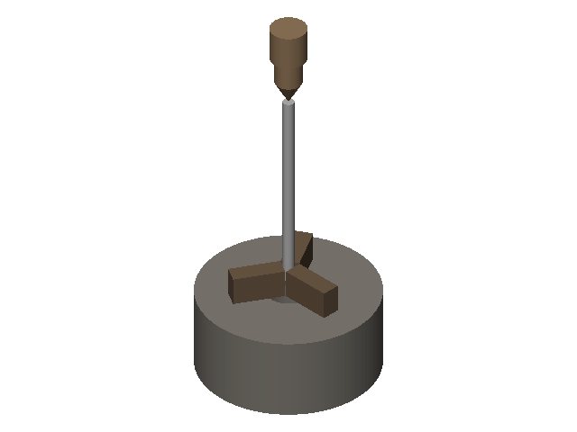
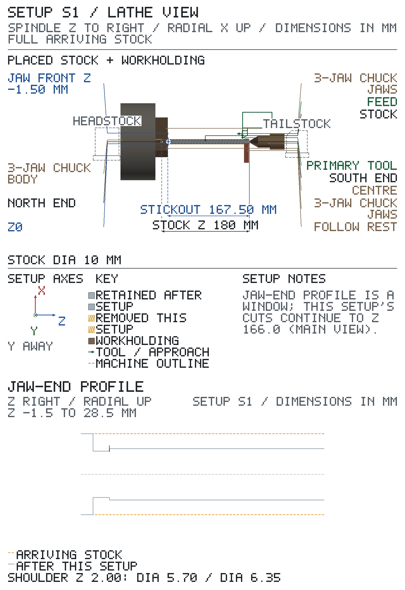
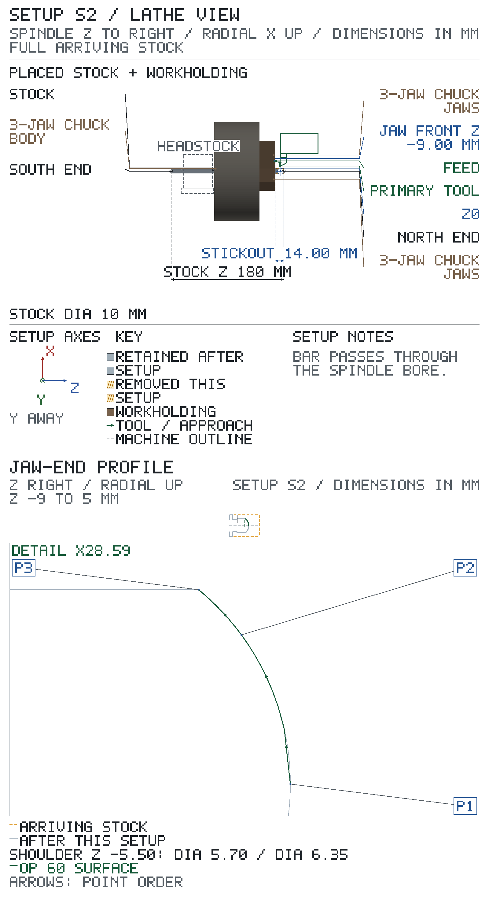
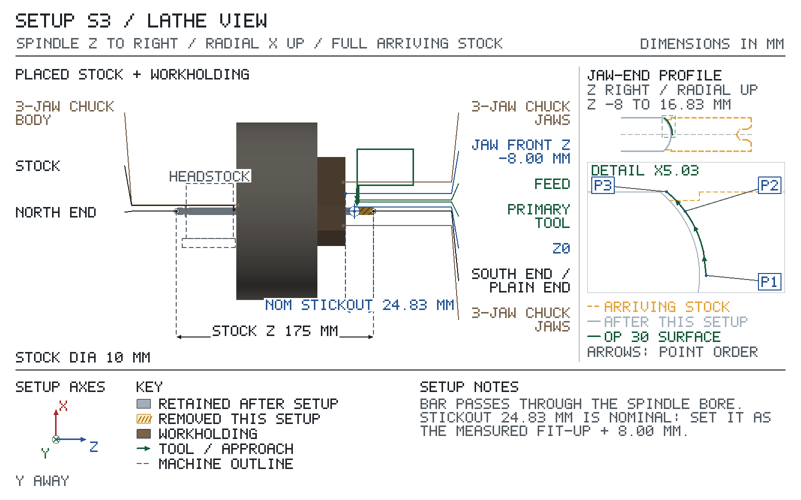

Drawing material: AISI 1018 cold-finished steel bar, Ø10 / Plain Carbon Steel. Finish: turned, oiled.
Speeds and feeds are starting points, not limits.
DRO: Electronica EL400 Operation Manual, ABS mode; zero with Axis Set, never Preset.
DRO resolution: PM-1127VF-LB 0.01 mm (X reads diameter). DRO targets print on this grid.
Stock: round bar Ø10.00 × 180.50 long. Supply datum: north dome apex plane to south supply end. North allowance: 5.00 mm. Supply length: 175.00 mm.
| setup | starts from | machine | holding |
|---|---|---|---|
| S0 | the stock blank | PM-1127VF-LB | 6 in 3-jaw chuck |
| S1 | part as it arrives from Setup S0 | PM-1127VF-LB | 6 in 3-jaw chuck |
| S2 | part as it arrives from Setup S1 | PM-1127VF-LB | 6 in 3-jaw chuck |
| S3 | part as it arrives from Setup S2 | PM-1127VF-LB | 6 in 3-jaw chuck |
| feature | limits |
|---|---|
| pivot bearing | Ø 6.330–6.350; Ra 1.6 |
| pivot journal | Ø 6.330–6.350; Ra 1.6; length 5.2–6.8 |
| shoulder od | Ø 9.49–10.51 |
| shoulder north face | length 0.99–2.01 |
| shoulder thrust | Ra 1.6; length 0.99–2.01 |
| north relief | Ø 5.570–5.830; width 1.2–2.8 |
| south relief | Ø 5.570–5.830; width 1.2–2.8 |
| north dome | height 0.7–2.3 |
| south dome | height 0.7–2.3 |
| all edges | REMOVE BURRS AND BREAK SHARP EDGES R0.25 OR CHAMFER 0.25 MAX |
| setup / op | hold | gauge | drawing | why |
|---|---|---|---|---|
| S3 op 20 | pivot bearing scribe to faced end 1.500–2.000 | lathe Z DRO | length REF 156.67, no limit | channel assembly fit-up note, plain end 1.5 to 2.0 past the scribe; the shaft drawing leaves this span CUT TO FIT |
T# = tool number in that setup's TOOLS table. CD = centre drill. mic = micrometer.
Sign off: __________ First article / measured results: ____________________
Starts from: the stock blank — Ø10.00, north end at Z -180.00, south end at Z 0.50.
| grip length mm | stickout mm | jaw fronts at Z |
|---|---|---|
| 20.00 | 15.00 | -14.50 |
Coolant: CRC cutting oil brushed on.
| T | tool | insert / size / material | holder / station | ops |
|---|---|---|---|---|
| T1 | AR turning/facing holder | A R Warner, right-hand, TCMT-21.51 insert, nose R0.40, carbide, projection 20.00 from holder face | QCTP holder #1 turning/facing | 10 |
| T2 | #2 CD | right-hand, Ø1.98, shank Ø4.76, flute 1.90, 2 flutes, M42, projection 27.00 from holder face | drill chuck | 20 |
Positive directions: X+ away from the spindle axis; Z+ toward the exposed end, away from the chuck. Axis Set each axis (never Preset), then jog without touching: the display must show 'must read'; 'if reversed' means STOP, fix the axis direction and redo the zero.
Before touching off T1 AR turning/facing holder: set its cutting edge on spindle centre height with the holder's height nut: level with the tailstock dead-centre point, or so a facing cut leaves no pip at the centre.
| axis | touch / pick up | Axis Set | check jog | must read | if reversed |
|---|---|---|---|---|---|
| X | spindle axis; take a light trial cut, withdraw along Z without moving X, stop the spindle, measure the diameter; T1 AR turning/facing holder; from +X side; measure with 0-1 in mic | measured Ø | +X 10.00 | measured Ø + 20.00 | measured Ø − 20.00 |
| Z | plain end (sawn); touch the sawn end with the spindle running until the first chip shows; no paper: the plain end is waste, parted off in S3; T1 AR turning/facing holder; from +Z side; surface at 0.50; direct contact, no paper | 0.50 | +Z 10.00 | 10.50 | -9.50 |
| SETUP S0 — sheet 1 (continued): operations | ||||||||
|---|---|---|---|---|---|---|---|---|
| op | do | feature | tool | rpm | feed | Z from → to | direction | inspection: limit, gauge |
| 10 | face, 0.25 mm axial per pass (facing) | plain end | T1 | 2000 | 0.05 mm/rev (100 mm/min) | Z → 0.00 | face from OD to centre | — |
Two passes of 0.25 from the O.D. to the centre, the second to Z0. The tool point must be on centre height: a pip left at the centre makes the centre drill wander. | ||||||||
| 20 | center drill | plain end centre | T2 | 2000 | 0.038 mm/rev (76 mm/min) | quill 2.86 past touching the end | — | — |
Lock the carriage clear of the end. Slide the tailstock up until the centre drill is about 5 mm off the faced end and lock it. Feed the quill by hand with oil on the drill; touch the end, then feed on the depth the quill scale shows, backing out twice to clear chips. The Ø3.0 mouth is the dead-centre seat for S1. | ||||||||
Sign off: __________ First article / measured results: ____________________

Chuck Ø158.00 in swing over bed Ø279.40: fits.
Work Ø10.00 in swing over cross-slide Ø169.93: fits.
Length needed from the spindle nose 87.00 of 699.77 between centres: fits.
Jaw fronts at Z -14.50; closest planned tool stop 14.50 mm from the jaws.
Starts from: part as it arrives from Setup S0 — Ø10.00, north end at Z -14.00, south end at Z 166.00.
| grip length mm | stickout mm | jaw fronts at Z | centre tip at Z | quill out mm |
|---|---|---|---|---|
| 12.50 | 167.50 | -1.50 | 163.40 | 30.00 |
Coolant: CRC cutting oil brushed on.
| T | tool | insert / size / material | holder / station | ops |
|---|---|---|---|---|
| T3 | 3/8 in HSS turning tool | right-hand, nose R0.40, 3/8 x 3/8 x 2-1/2 in, M42, projection 20.00 from holder face | QCTP holder #1 turning/facing | 10, 20, 30 |
| T4 | 1.6 mm parting blade | right-hand, nose R0.10, 1/16 x 1/2 x 4-1/2 in, max plunge depth 15.00, M2, projection 15.00 from holder face | QCTP holder #7 parting | 50 |
Positive directions: X+ away from the spindle axis; Z+ toward the exposed end, away from the chuck. Axis Set each axis (never Preset), then jog without touching: the display must show 'must read'; 'if reversed' means STOP, fix the axis direction and redo the zero.
Before touching off T3 3/8 in HSS turning tool: set its cutting edge on spindle centre height with the holder's height nut: level with the tailstock dead-centre point, or so a facing cut leaves no pip at the centre.
| axis | touch / pick up | Axis Set | check jog | must read | if reversed |
|---|---|---|---|---|---|
| X | spindle axis; take a light trial cut, withdraw along Z without moving X, stop the spindle, measure the diameter; T3 3/8 in HSS turning tool; from +X side; measure with 0-1 in mic | measured Ø | +X 10.00 | measured Ø + 20.00 | measured Ø − 20.00 |
| Z | plain end (faced and centre-drilled in S0); touch with the spindle running until the first chip shows; no paper: the plain end is waste, parted off in S3; T3 3/8 in HSS turning tool; from +Z side; surface at 166.00; direct contact, no paper | 166.00 | +Z 10.00 | 176.00 | 156.00 |
Before touching off T4 1.6 mm parting blade: set its cutting edge on spindle centre height with the holder's height nut: level with the tailstock dead-centre point, or so a facing cut leaves no pip at the centre; then square the blade to the spindle axis: spindle stopped, bring its side flat against the chuck face or a faced shoulder, swing the toolpost until no gap shows, then lock the toolpost.
Before op 50 (after op 30), touch off T4 1.6 mm parting blade: X — on the pivot bearing Ø, measured, paper 0.05 (0-1 in mic): spindle stopped: mic the bearing Ø next to the thrust face (op 30 just finished it; one diameter, so the anvils sit anywhere on it); bring the blade tip in on that same spot through cigarette paper (0.05) until the paper drags; Axis Set X measured Ø + 0.10. Z — chuck-side corner on the shoulder thrust: spindle stopped; feed the chuck-side corner in until the paper drags; withdraw along X without moving Z, paper 0.05; Axis Set Z 0.05: Z now reads the chuck-side corner.
| SETUP S1 — sheet 1 (continued): operations | ||||||||
|---|---|---|---|---|---|---|---|---|
| op | do | feature | tool | rpm | feed | Z from → to | direction | inspection: limit, gauge |
| 5 | inspect | shoulder od | — | — | — | — | — | Ø 9.49–10.51: 0-1 in mic |
Before op 10 makes the first cut on the part's body: mic the plain bar just in front of the jaw fronts, where the Ø10 shoulder stays as supplied, against 9.49–10.51. Out of the band: stop, the blank is from the wrong bar; do not turn it. | ||||||||
| 10 | rough turn to Ø6.55, leave 0.20 mm on Ø, 0.50 mm radial per pass | pivot bearing | T3 | 1350 | 0.08 mm/rev (108 mm/min) | Z 166.30 → 0.20 follow rest on: Z 152.00 | toward chuck | — |
| JAWS Z -1.50: 1.70 clear — hand feed to a stopSTART Z 166.30: 0.47 CLEAR OF the 23.8 mm dead centre — start no further out than Z 167.24Follow rest, each pass: start with the jaws backed off; at Z 152.00: stop the feed, then the spindle; set the follow-rest jaws on the diameter just turned and lock them; restart the spindle, then resume the feed. Pass end: stop the feed, then the spindle; back the follow-rest jaws off; withdraw the tool along X; return the carriage to the pass start. Four passes, Ø10 → Ø6.55; the rest jaws are reset on each new diameter at Z152 (S3 cuts that end length off). The Ø10 shoulder stays as bar. | ||||||||
| 20 | face, 0.20 mm axial per pass (facing) | shoulder thrust | T3 | 850 | 0.05 mm/rev (43 mm/min) | Z → 0.00 | face outward from the inner corner to the OD | Ra 1.6: roughness comparator |
| JAWS Z -1.50: 1.50 clear — hand feed to a stop Op 10 left the body at Ø6.55, 0.2 short of the shoulder: feed out from the Ø6.55 body to the Ø10 O.D. The tool starts in the corner, so the face meets the body square, and the burr goes over the O.D. edge; op 30 then finishes the body to Ø6.35 right up to this face. | ||||||||
| 30 | finish turn, 0.10 mm radial per pass | pivot bearing | T3 | 1700 | 0.05 mm/rev (85 mm/min) | Z 166.30 → 0.00 follow rest on: Z 152.00 | toward chuck | Ø 6.330–6.350: 0-1 in mic Ra 1.6: roughness comparator |
| JAWS Z -1.50: 1.50 clear — hand feed to a stopSTART Z 166.30: 0.47 CLEAR OF the 23.8 mm dead centre — start no further out than Z 167.24Follow rest, each pass: start with the jaws backed off; at Z 152.00: stop the feed, then the spindle; set the follow-rest jaws on the diameter just turned and lock them; restart the spindle, then resume the feed. Pass end: stop the feed, then the spindle; back the follow-rest jaws off; withdraw the tool along X; return the carriage to the pass start. One pass, Ø6.55 → Ø6.35, with the rest jaws set on the finished diameter at Z152. After the pass end: spindle stopped, tool withdrawn along X, carriage run back clear; then mic at both ends and the middle for taper and check the finish with the comparator before moving on. | ||||||||
| 50 | form relief, 0.33 mm radial, total plunge depth | south relief | T4 | 1200 | 0.02 mm/rev (24 mm/min) | Z 0.00 → 2.00 plunge 1 chuck-side corner Z 0.00 plunge 2 chuck-side corner Z 0.40 each to Ø 5.70 | plunge straight in | Ø 5.570–5.830: caliper width 1.2–2.8: caliper |
| JAWS Z -1.50: 1.50 clear — hand feed to a stop | ||||||||
| 60 | deburr | shoulder thrust | — | — | — | — | — | — |
Spindle stopped, lathe in neutral, carriage and follow rest run back clear. Turn the chuck by hand and break the two edges this setup made: the shoulder O.D. edge on the thrust face, and the bearing-side edge of the south relief at Z2. Use a fine needle file held at 45°, then a slip stone, to R0.25 or 0.25 chamfer max. Do not touch the thrust face, the relief floor or the bearing Ø. Check each edge under the 10x measuring loupe: the break shows all round, is no wider than 0.25 (2½ reticle divisions), and no burr catches a fingernail. | ||||||||
Sign off: __________ First article / measured results: ____________________

Chuck Ø158.00 in swing over bed Ø279.40: fits.
Work Ø10.00 in swing over cross-slide Ø169.93: fits.
Length needed from the spindle nose 239.50 of 699.77 between centres: fits.
Tailstock quill out 30.00 mm.
Jaw fronts at Z -1.50; closest planned tool stop 1.50 mm from the jaws.
| feature | drawing Ø limits | turn to Ø | cut from Z | cut to Z |
|---|---|---|---|---|
| pivot bearing | Ø6.330–6.350 | Ø6.35 | 166.30 | 0.00 |
| south relief | Ø5.570–5.830 | Ø5.70 | 2.00 | 0.00 |
X reads diameter. Z values are where this setup's cuts on each surface start and end, not the finished extent: a later cut (relief, part-off, next setup) may shorten the surface.
Turn the part end for end. Starts from: part as it arrives from Setup S1 — Ø6.35, north end at Z 5.00, south end at Z -175.00.
| grip length mm | stickout mm | jaw fronts at Z |
|---|---|---|
| 25.00 | 14.00 | -9.00 |
Coolant: CRC cutting oil brushed on.
| T | tool | insert / size / material | holder / station | ops |
|---|---|---|---|---|
| T3 | 3/8 in HSS turning tool | right-hand, nose R0.40, 3/8 x 3/8 x 2-1/2 in, M42, projection 20.00 from holder face | QCTP holder #1 turning/facing | 10, 20, 30, 50, 60 |
| T4 | 1.6 mm parting blade | right-hand, nose R0.10, 1/16 x 1/2 x 4-1/2 in, max plunge depth 15.00, M2, projection 15.00 from holder face | QCTP holder #7 parting | 40 |
Positive directions: X+ away from the spindle axis; Z+ toward the exposed end, away from the chuck. Axis Set each axis (never Preset), then jog without touching: the display must show 'must read'; 'if reversed' means STOP, fix the axis direction and redo the zero.
Before touching off T3 3/8 in HSS turning tool: set its cutting edge on spindle centre height with the holder's height nut: level with the tailstock dead-centre point, or so a facing cut leaves no pip at the centre.
| axis | touch / pick up | Axis Set | check jog | must read | if reversed |
|---|---|---|---|---|---|
| X | spindle axis; take a light trial cut, withdraw along Z without moving X, stop the spindle, measure the diameter; T3 3/8 in HSS turning tool; from +X side; measure with 0-1 in mic | measured Ø | +X 10.00 | measured Ø + 20.00 | measured Ø − 20.00 |
| Z | north stub end; touch it, then set from the measured M; T3 3/8 in HSS turning tool; from +Z side; direct contact, no paper; M measured before clamping (HOLD) | M − 9.00 | +Z 10.00 | M + 1.00 | M − 19.00 |
Before touching off T4 1.6 mm parting blade: set its cutting edge on spindle centre height with the holder's height nut: level with the tailstock dead-centre point, or so a facing cut leaves no pip at the centre; then square the blade to the spindle axis: spindle stopped, bring its side flat against the chuck face or a faced shoulder, swing the toolpost until no gap shows, then lock the toolpost.
Before op 40 (after op 30), touch off T4 1.6 mm parting blade: X — on the pivot journal Ø, measured, paper 0.05 (0-1 in mic): spindle stopped: mic the journal Ø next to the shoulder north face (op 30 just finished it; one diameter, so the anvils sit anywhere on it); bring the blade tip in on that same spot through cigarette paper (0.05) until the paper drags; Axis Set X measured Ø + 0.10. Z — chuck-side corner on the shoulder north face: spindle stopped; feed the chuck-side corner in until the paper drags; withdraw along X without moving Z, paper 0.05; Axis Set Z -7.45: Z now reads the chuck-side corner.
Before op 50 (after op 40), touch off T3 3/8 in HSS turning tool: X — on the pivot journal Ø, measured, paper 0.05 (0-1 in mic): spindle stopped: mic the stub Ø between Z0 and Z5 (op 30 turned it with the journal; op 50 faces it off); bring the tool nose in on the stub through cigarette paper (0.05) until the paper drags; Axis Set X measured Ø + 0.10. Z — on the shoulder north face: spindle stopped; bring this tool's Z-cutting edge in until the paper drags on the shoulder north face; withdraw along X without moving Z, paper 0.05; Axis Set Z -7.45.
| SETUP S2 — sheet 1 (continued): operations | ||||||||
|---|---|---|---|---|---|---|---|---|
| op | do | feature | tool | rpm | feed | Z from → to | direction | inspection: limit, gauge |
| 10 | rough turn to Ø6.55, leave 0.20 mm on Ø, 0.50 mm radial per pass | pivot journal | T3 | 1350 | 0.10 mm/rev (135 mm/min) | Z 5.00 → -7.30 | toward chuck | — |
| JAWS Z -9.00: 1.70 clear — hand feed to a stop Rough the stub and journal together; the dome is formed from this O.D. | ||||||||
| 20 | face, 0.20 mm axial per pass (facing) | shoulder north face | T3 | 1400 | 0.05 mm/rev (70 mm/min) | Z → -7.50 | face outward from the inner corner to the OD | — |
| JAWS Z -9.00: 1.50 clear — hand feed to a stop Feed out from the journal to the Ø10 O.D.: the tool starts in the corner, so the face meets the journal square, and the burr goes over the O.D. edge. | ||||||||
| 30 | finish turn, 0.10 mm radial per pass | pivot journal | T3 | 1700 | 0.05 mm/rev (85 mm/min) | Z 5.00 → -7.50 | toward chuck | Ø 6.330–6.350: 0-1 in mic Ra 1.6: roughness comparator |
| JAWS Z -9.00: 1.50 clear — hand feed to a stop After the pass: stop the spindle, withdraw the tool along X and run the carriage back clear before you mic the journal and check its finish with the comparator. | ||||||||
| 40 | form relief, 0.33 mm radial, total plunge depth | north relief | T4 | 1200 | 0.02 mm/rev (24 mm/min) | Z -7.50 → -5.50 plunge 1 chuck-side corner Z -7.50 plunge 2 chuck-side corner Z -7.10 each to Ø 5.70 | plunge straight in | Ø 5.570–5.830: caliper width 1.2–2.8: caliper |
| JAWS Z -9.00: 1.50 clear — hand feed to a stop | ||||||||
| 50 | face, 1.00 mm axial per pass (facing) | north dome | T3 | 1400 | 0.08 mm/rev (112 mm/min) | Z → 0.00 | face from OD to centre | — |
| JAWS Z -9.00: 9.00 clear — disengage the feed early, hand feed to the end Face the stub off to the apex plane, feeding toward the centre; stop at centre height and check for a pip. | ||||||||
| 60 | form dome, leave 0.20 mm on Ø, 0.10 mm per pass, square to the dome | north dome | T3 | 1400 | 0.05 mm/rev (70 mm/min) | Z 0.00 → -1.50 | apex to base | height 0.7–2.3: caliper [S2 sheet 2 note 1] |
| JAWS Z -9.00: 7.35 clear — disengage the feed early, hand feed to the end Forms the dome and with it the north end of the journal (JournalLength). Rough first, row by row down the ROUGH table on S2 sheet 3: each row is one pass, 0.10 deep in Z — at the row's Z, feed in along X from outside the work to the row's X, then back out. Then take the FINISH table. The 0.20 left on Ø is the finish allowance the rough rows leave, not a pass depth. See contour table on S2 sheet 3 | ||||||||
| 70 | inspect | pivot journal | — | — | — | — | — | length 5.2–6.8: caliper [S2 sheet 2 note 2] |
JournalLength runs from the dome base edge (formed in op 60) to the shoulder north face. | ||||||||
| 71 | inspect | shoulder north face, shoulder thrust | — | — | — | — | — | length 0.99–2.01: caliper |
Shoulder length: caliper across the Ø10 shoulder, north face to thrust face. | ||||||||
| 80 | deburr | shoulder north face | — | — | — | — | — | — |
Spindle stopped, lathe in neutral, carriage run back clear. Turn the chuck by hand and break the edges this setup made: the shoulder O.D. edge on the north face, the journal-side edge of the north relief at Z-5.5 and the dome base rim. Use the fine needle file held at 45°, then the slip stone, to R0.25 or 0.25 chamfer max. Do not touch the shoulder north face, the relief floor, the journal Ø or the dome. Check each edge under the 10x measuring loupe: the break shows all round, is no wider than 0.25 (2½ reticle divisions), and no burr catches a fingernail. | ||||||||
Sign off: __________ First article / measured results: ____________________

Chuck Ø158.00 in swing over bed Ø279.40: fits.
Work Ø6.35 in swing over cross-slide Ø169.93: fits.
Length needed from the spindle nose 86.00 of 699.77 between centres: fits.
Jaw fronts at Z -9.00; closest planned tool stop 1.50 mm from the jaws.
| feature | drawing Ø limits | turn to Ø | cut from Z | cut to Z |
|---|---|---|---|---|
| pivot journal | Ø6.330–6.350 | Ø6.35 | 5.00 | -7.50 |
| north relief | Ø5.570–5.830 | Ø5.70 | -5.50 | -7.50 |
X reads diameter. Z values are where this setup's cuts on each surface start and end, not the finished extent: a later cut (relief, part-off, next setup) may shorten the surface.
Rough stair, leaves 0.20 mm on diameter for the finish table: for each row, from outside the work at the row's Z, face in to X, then back out radially. X (Ø) / Z are the DRO readings of the imaginary tip, touched off on an outside diameter and a +Z end face.
| S2 op 60 — north dome · T3 3/8 in HSS turning tool · apex to base | ||
|---|---|---|
| row | Z | in to X (Ø) |
| 1 | -0.10 | 2.56 |
| 2 | -0.20 | 3.12 |
| 3 | -0.30 | 3.58 |
| 4 | -0.40 | 3.98 |
| 5 | -0.50 | 4.33 |
| 6 | -0.60 | 4.65 |
| 7 | -0.70 | 4.94 |
| 8 | -0.80 | 5.20 |
| 9 | -0.90 | 5.45 |
| 10 | -1.00 | 5.68 |
| 11 | -1.10 | 5.89 |
| 12 | -1.20 | 6.08 |
| 13 | -1.30 | 6.27 |
Sphere R4.11: apex Z 0.00 → base Z -1.50, every 0.10 in Z. Surface X (Ø) / Z are the finished dome; tool X (Ø) / Z are the DRO readings of the R0.40 nose's imaginary tip, touched off on an outside diameter and a +Z end face; feed to the tool columns. Row to row: move X out to the next row first, then Z toward the chuck (Z first gouges the dome). Enter at P1 from +Z; leave radially, X out, at P3. P1 tool X -0.80 Ø is intentional: the R0.40 nose centre is on the axis there (imaginary tip past centre).
| S2 op 60 — north dome · T3 3/8 in HSS turning tool · apex to base | |||||
|---|---|---|---|---|---|
| # | P | surface X (Ø) | surface Z | tool X (Ø) | tool Z |
| 1 | P1 | 0.00 | 0.00 | -0.80 | 0.00 |
| 2 | 1.80 | -0.10 | 1.18 | -0.11 | |
| 3 | 2.53 | -0.20 | 1.98 | -0.22 | |
| 4 | 3.08 | -0.30 | 2.58 | -0.33 | |
| 5 | 3.54 | -0.40 | 3.08 | -0.44 | |
| 6 | 3.93 | -0.50 | 3.51 | -0.55 | |
| 7 | 4.28 | -0.60 | 3.89 | -0.66 | |
| 8 | 4.59 | -0.70 | 4.24 | -0.77 | |
| 9 | P2 | 4.87 | -0.80 | 4.55 | -0.88 |
| 10 | 5.13 | -0.90 | 4.83 | -0.99 | |
| 11 | 5.37 | -1.00 | 5.10 | -1.10 | |
| 12 | 5.60 | -1.10 | 5.34 | -1.21 | |
| 13 | 5.80 | -1.20 | 5.57 | -1.32 | |
| 14 | 6.00 | -1.30 | 5.78 | -1.43 | |
| 15 | 6.18 | -1.40 | 5.98 | -1.54 | |
| 16 | P3 | 6.35 | -1.50 | 6.17 | -1.65 |
Trial fit before S3, off the lathe. Fit: push the shaft through both rocker-bank ears, shoulder hard against the north ear; ink the body at the south ear's outer face and scribe a light ring through the ink; remove the shaft. Measure: caliper from the plain end to the scribe (loupe on the scribe); nominal 16.83. Then: 16.33 to 17.33, go on. Outside that, clean the ear bores and shoulder, refit, re-ink, scribe again and re-measure. Still outside but 11.50 or more: go on, with stickout = your reading + 8 (every other S3 number is set from the scribe and stays as printed). Under 11.50: do not cut; the bank's ears are more than 5 mm off and the S1 follow-rest mark would land on the finished bearing; keep the shaft until the bank is corrected.
Turn the part end for end. Starts from: part as it arrives from Setup S2 — Ø6.35, north end at Z -158.17, south end at Z 16.83, plain end at Z 16.83.
| grip length mm | nominal stickout mm | set stickout | jaw fronts at Z |
|---|---|---|---|
| 25.00 | 24.83 | measured trial-fit scribe-to-end reading + 8.00 | -8.00 |
Coolant: CRC cutting oil brushed on.
| T | tool | insert / size / material | holder / station | ops |
|---|---|---|---|---|
| T3 | 3/8 in HSS turning tool | right-hand, nose R0.40, 3/8 x 3/8 x 2-1/2 in, M42, projection 20.00 from holder face | QCTP holder #1 turning/facing | 20, 30 |
| T4 | 1.6 mm parting blade | right-hand, nose R0.10, 1/16 x 1/2 x 4-1/2 in, max plunge depth 15.00, M2, projection 15.00 from holder face | QCTP holder #7 parting | 10 |
Positive directions: X+ away from the spindle axis; Z+ toward the exposed end, away from the chuck. Axis Set each axis (never Preset), then jog without touching: the display must show 'must read'; 'if reversed' means STOP, fix the axis direction and redo the zero.
Before zeroing: indicate the pivot bearing with the dial indicator; tap true to 0.02 mm total indicator reading or less.
Before touching off T3 3/8 in HSS turning tool: set its cutting edge on spindle centre height with the holder's height nut: level with the tailstock dead-centre point, or so a facing cut leaves no pip at the centre.
| axis | touch / pick up | Axis Set | check jog | must read | if reversed |
|---|---|---|---|---|---|
| X | spindle axis: trial cut only on the plain-end waste, from the plain end in to Z6 (all of it past the parting line, cut off in op 10); never on the bearing. Mic the land with the anvils between Z7 and the end; take a light trial cut, withdraw along Z without moving X, stop the spindle, measure the diameter; T3 3/8 in HSS turning tool; from +X side; measure with 0-1 in mic | measured Ø | +X 10.00 | measured Ø + 20.00 | measured Ø − 20.00 |
| Z | scribe; align tool point to scribe; T3 3/8 in HSS turning tool; from +Z side; surface at 0.00; direct contact, no paper | 0.00 | +Z 10.00 | 10.00 | -10.00 |
Before touching off T4 1.6 mm parting blade: set its cutting edge on spindle centre height with the holder's height nut: level with the tailstock dead-centre point, or so a facing cut leaves no pip at the centre; then square the blade to the spindle axis: spindle stopped, bring its side flat against the chuck face or a faced shoulder, swing the toolpost until no gap shows, then lock the toolpost.
Before op 10, touch off T4 1.6 mm parting blade: X — on the X-zero trial-cut land, measured, paper 0.05 (0-1 in mic): spindle stopped: mic the T3 trial-cut land again, anvils between Z7 and the end (the land stands until op 10 cuts it off); bring the blade tip in on that land through cigarette paper (0.05) until the paper drags; Axis Set X measured Ø + 0.10. Z — chuck-side corner on the scribe: spindle stopped; align the chuck-side corner to the scribe; withdraw along X without moving Z, no paper; Axis Set Z 0.00: Z now reads the chuck-side corner.
Before op 20 (after op 10), touch off T3 3/8 in HSS turning tool: X — on the pivot bearing Ø, measured, paper 0.05 (0-1 in mic): spindle stopped: mic the body Ø between the jaw fronts and the parted end (Z-7 to Z2: one finished diameter, so the anvils sit anywhere on it); bring the tool nose in on the stub past the scribe, Z1 to Z2, through cigarette paper (0.05) until the paper drags; Axis Set X measured Ø + 0.10. Z — on the scribe: spindle stopped; align the tool nose to the centre of the scribe; withdraw along X without moving Z, no paper; Axis Set Z 0.00.
| SETUP S3 — sheet 1 (continued): operations | ||||||||
|---|---|---|---|---|---|---|---|---|
| op | do | feature | tool | rpm | feed | Z from → to | direction | inspection: limit, gauge |
| 10 | cut to fit | south dome | T4 | 1050 | 0.025 mm/rev (26 mm/min) | Z → 2.25 (chuck-side corner) X 6.35 → 0.00 (3.18 radial) | plunge straight in | — |
Part the waste off long, chuck-side blade corner at Z2.25. Plunge from X6.35 (the bearing Ø) to X0.00 on the DRO, 3.18 radial in total, pecking and clearing chips. Let the waste offcut drop into the chip tray; pick it up only with the spindle stopped. Op 20 faces off the parting pip. | ||||||||
| 20 | face, 0.25 mm axial per pass (facing) | south dome | T3 | 1400 | 0.05 mm/rev (70 mm/min) | Z → 1.75 | face from OD to centre | PROCESS HOLD — not a drawing limit (why: see job page): pivot bearing scribe to faced end 1.500–2.000 (drawing: length REF 156.67, no limit): lathe Z DRO see S3 sheet 2 note 1 |
| JAWS Z -8.00: 9.75 clear — disengage the feed early, hand feed to the end Face the parted end to Z1.75 in two passes, feeding toward the centre; stop at centre height and check that no pip is left. | ||||||||
| 30 | form dome, leave 0.20 mm on Ø, 0.10 mm per pass, square to the dome | south dome | T3 | 1400 | 0.05 mm/rev (70 mm/min) | Z 1.75 → 0.25 | apex to base | height 0.7–2.3: caliper [S3 sheet 2 note 2] |
| JAWS Z -8.00: 8.10 clear — disengage the feed early, hand feed to the end Rough first, row by row down the ROUGH table on S3 sheet 3: each row is one pass, 0.10 deep in Z — at the row's Z, feed in along X from outside the work to the row's X, then back out. Then take the FINISH table. The 0.20 left on Ø is the finish allowance the rough rows leave, not a pass depth. See contour table on S3 sheet 3 | ||||||||
| 35 | deburr | south dome | — | — | — | — | — | — |
Spindle stopped, lathe in neutral, carriage run back clear. Turn the chuck by hand and break the south dome base rim with the fine needle file held at 45°, then the slip stone, to R0.25 or 0.25 chamfer max. Do not touch the dome or the bearing Ø. Check it under the 10x measuring loupe: the break shows all round, is no wider than 0.25 (2½ reticle divisions), and no burr catches a fingernail. Deburr before the part comes out for oiling. | ||||||||
| 40 | coating | pivot bearing | light machine oil (in-house) | — | — | — | — | — |
Drawing finish: turned, oiled. Out of the chuck, on the bench: wipe off chips and cutting oil with a clean rag, then wipe a thin film of light machine oil over the whole shaft, domes included. | ||||||||
Sign off: __________ First article / measured results: ____________________

Chuck Ø158.00 in swing over bed Ø279.40: fits.
Work Ø6.35 in swing over cross-slide Ø169.93: fits.
Length needed from the spindle nose 96.83 of 699.77 between centres: fits.
Jaw fronts at Z -8.00; closest planned tool stop 8.10 mm from the jaws.
Calculate: scribe-to-end = Z end − 0.05 = result ____________
Rough stair, leaves 0.20 mm on diameter for the finish table: for each row, from outside the work at the row's Z, face in to X, then back out radially. X (Ø) / Z are the DRO readings of the imaginary tip, touched off on an outside diameter and a +Z end face.
| S3 op 30 — south dome · T3 3/8 in HSS turning tool · apex to base | ||
|---|---|---|
| row | Z | in to X (Ø) |
| 1 | 1.65 | 2.56 |
| 2 | 1.55 | 3.12 |
| 3 | 1.45 | 3.58 |
| 4 | 1.35 | 3.98 |
| 5 | 1.25 | 4.33 |
| 6 | 1.15 | 4.65 |
| 7 | 1.05 | 4.94 |
| 8 | 0.95 | 5.20 |
| 9 | 0.85 | 5.45 |
| 10 | 0.75 | 5.68 |
| 11 | 0.65 | 5.89 |
| 12 | 0.55 | 6.08 |
| 13 | 0.45 | 6.27 |
Sphere R4.11: apex Z 1.75 → base Z 0.25, every 0.10 in Z. Surface X (Ø) / Z are the finished dome; tool X (Ø) / Z are the DRO readings of the R0.40 nose's imaginary tip, touched off on an outside diameter and a +Z end face; feed to the tool columns. Row to row: move X out to the next row first, then Z toward the chuck (Z first gouges the dome). Enter at P1 from +Z; leave radially, X out, at P3. P1 tool X -0.80 Ø is intentional: the R0.40 nose centre is on the axis there (imaginary tip past centre).
| S3 op 30 — south dome · T3 3/8 in HSS turning tool · apex to base | |||||
|---|---|---|---|---|---|
| # | P | surface X (Ø) | surface Z | tool X (Ø) | tool Z |
| 1 | P1 | 0.00 | 1.75 | -0.80 | 1.75 |
| 2 | 1.80 | 1.65 | 1.18 | 1.64 | |
| 3 | 2.53 | 1.55 | 1.98 | 1.53 | |
| 4 | 3.08 | 1.45 | 2.58 | 1.42 | |
| 5 | 3.54 | 1.35 | 3.08 | 1.31 | |
| 6 | 3.93 | 1.25 | 3.51 | 1.20 | |
| 7 | 4.28 | 1.15 | 3.89 | 1.09 | |
| 8 | 4.59 | 1.05 | 4.24 | 0.98 | |
| 9 | P2 | 4.87 | 0.95 | 4.55 | 0.87 |
| 10 | 5.13 | 0.85 | 4.83 | 0.76 | |
| 11 | 5.37 | 0.75 | 5.10 | 0.65 | |
| 12 | 5.60 | 0.65 | 5.34 | 0.54 | |
| 13 | 5.80 | 0.55 | 5.57 | 0.43 | |
| 14 | 6.00 | 0.45 | 5.78 | 0.32 | |
| 15 | 6.18 | 0.35 | 5.98 | 0.21 | |
| 16 | P3 | 6.35 | 0.25 | 6.17 | 0.10 |